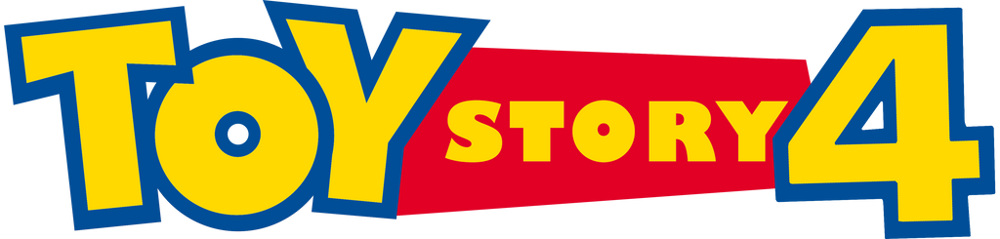

üé¨ Filmy
Tutaj znajdziecie linki do filmów pełnometrażowych, krótkometrażowych, seriali i dodatków specjalnych!
Filmy pełnometrażowe
- üáµüá± Toy Story
- üáµüá± Toy Story 2
- üáµüá± Toy Story 3
- üáµüá± Toy Story 4
- Buzz Lightyear of Star Command: The Adventure Begins
- üáµüá± Buzz Astral Lightyear
Filmy krótkometrażowe
- Przygody nocnej lampki Lamp Life
- Za końcem świata: Podróż Buzza Astrala Beyond Infinity: Buzz and the Journey to Lightyear
- Kosmiczny fitness To Fitness and Beyond
- Pluszowe gadki Kwaka i Bunia: Miłość Fluffy Stuff with Ducky & Bunny: Love
- Pluszowe gadki Kwaka i Bunia: Trzy łby Fluffy Stuff with Ducky & Bunny: Three Heads
- üáµüá± Wakacje na Hawajach Hawaiian Vacation
- üáµüá± Zestaw pomniejszony Small Fry
- üáµüá± Imprezozaur Rex Partysaurus Rex
- üáµüá± Toy Story: Horror Toy Story OF TERROR!
- üáµüá± Toy Story: Prehistoria Toy Story That Time Forgot
Seriale
-
Buzz Astral z Gwiezdnej Bazy Buzz Lightyear of Star Command

- E00 Pilot - The Adventure Begins (Part 1)
- E00 Pilot - The Adventure Begins (Part 2)
- E01 The Torque Armada
- E02 Gravitina
- E03 XL
- E04 Little Secrets
- E05 Inside Job
- E06 NOS-4-A2
- E07 The Planet Destroyer
- E08 The Beasts of Karn
- E09 Tag Team
- E10 The Main Event
- E11 The Return of XL
- E12 Strange Invasion
- E13 The Taking of PC-7
- E14 Mindwarp
- E15 Mira’s Wedding
- E16 Panic on Bathyos
- E17 Shiv Katall
- E18 Stress Test
- E19 A Zoo Out There
- E20 Root of Evil
- E21 Super Nova
- E22 Downloaded
- E23 The Plasma Monster
- E24 The Crawling Flesh
- E25 Dirty Work
- E26 The Slayer
- E27 The Lightyear Factor
- E28 Clone Rangers
- E29 Bunzel Fever
- E30 Devolutionaries
- E31 Head Case
- E32 The Yukari Imprint
- E33 The Shape Stealer
- E34 Star Crossed
- E35 Haunted Moon
- E36 Stranger Invasion
- E37 Eye of the Tempest
- E38 Revenge of the Monsters
- E39 Lone Wolf
- E40 Planet of the Lost
- E41 Revenge of the Raenoks
- E42 The Starthought
- E43 Millennial Bugs
- E44 Conspiracy
- E45 At Large on a Small Planet
- E46 Sunquake
- E47 First Missions
- E48 Large Target
- E49 War and Peace and War
-
üáµüá± Sztuciek siƒô pyta Forky Asks a Question

- E01 Czym są pieniądze? What Is Money?
- E02 Kto to jest przyjaciel? What Is a Friend?
- E03 Co to jest sztuka? What Is Art?
- E04 Co to jest czas? What Is Time?
- E05 Czym jest miłość? What Is Love?
- E06 Co to jest komputer? What Is a Computer?
- E07 Kim jest lider? What Is a Leader?
- E08 Kim jest zwierzak? What Is a Pet?
- E09 Co to jest ser? What Is Cheese?
- E10 Co to jest czytanie? What Is Reading?
Dodatki specjalne

- Dziennik pokładowy Buzza: Odpalamy Buzz Lightyear Mission Log: Blast Off
- Sekrety Pixara: Artyści Paths to Pixar: Artists
- Historie ze studia: Auto Johna Studio Stories: John’s Car
- Historie ze studia: Mały AJ Studio Stories: Baby AJ
- Historie ze studia: Wyścigi na hulajnogach Studio Stories: Scooter Races
- Buzz na Manhattanie Buzz Takes Manhattan
- Czarny piątek: Nieznane oblicze Toy Story Black Friday: The Toy Story You Never Saw

- Dziennik pokładowy Buzza: Międzynarodowa stacja kosmiczna Buzz Lightyear Mission Log: International Space Station
- Tajemnice Pixara: Artyści techniczni Paths to Pixar: Technical Artists
- Historie ze studia: Laboratorium Deprywacji Snu Toy Story 2 Studio Stories: TS2 Sleep Deprivation Lab
- Historie ze studia: Pinokio Studio Stories: Pinocchio
- Historie ze studia: Znikający film Studio Stories: The Movie Vanishes
- Zoetrop Pixara Pixar’s Zoetrope
- Joe Ranft: Wspomnienie o naszym przyjacielu Celebrating Our Friend Joe Ranft

- Krótkometrażówka Dzień i Noc Day & Night Animated Short
- Dziennik pokładowy Buzza: Międzynarodowa stacja kosmiczna Buzz Lightyear Mission Log: The Science of Adventure
polski tytuł trzeciego odcinka jest taki sam jak tytuł drugiego odcinka (prawdopodobnie błędnie)
- Ścieżki do Pixar: Montażyści Paths to Pixar: Editorial
- Historie ze studia: Gdzie jest Gordon? Studio Stories: Where’s Gordon?
- Historie ze studia: Płatki śniadaniowe Studio Stories: Cereal Bar
- Historie ze studia: Łyso nam Studio Stories: Clean Start
- Zabawki! - odświeżanie starych i tworzenie nowych postaci Toys!
- Jest cała banda - o ponownym spotkaniu wszystkich aktorów z serii Toy Story The Gang’s All Here
- Nowy świat zabawek - o nowej atrakcji w Disneyland Hong Kong A Toy's Eye View: Creating a Whole New Land
